<!DOCTYPE html>

<html lang="en">
<head>
<meta charset="utf-8"/>
<meta content="width=device-width, initial-scale=1" name="viewport"/>
<title>LabanFormer: Multi-scale graph attention network and transformer with gated recurrent positional encoding for labanotation generation</title>
<link href="reader.css" rel="stylesheet"/>
<script defer="" src="reader.js"></script>
</head>
<body>
<a class="skip-link" href="#paper-body">跳到正文 / Skip to paper</a>
<header class="reader-header">
<nav aria-label="Reader navigation" class="reader-nav"><a href="/blog/neurocomputing2023-labanformer/">返回中文解读</a>
<a href="source.pdf">原文 PDF ↗</a>
<a href="#paper-body">正文 / Paper</a>
</nav>
<div class="paper-heading">
<h1>LabanFormer: Multi-scale graph attention network and transformer with gated recurrent positional encoding for labanotation generation</h1>
<div class="paper-metadata"><p>Min Li · Zhenjiang Miao · Yuanyao Lu. Neurocomputing 539 (2023), 126203. <a href="https://doi.org/10.1016/j.neucom.2023.03.064">Publisher record ↗</a></p><p lang="zh-CN">本阅读版由 14 页期刊 PDF 自动重排，英文段落可直接选取和翻译。点击图、表、公式可放大；行内数学符号和识别文本请对照相应 PDF 页。© 2023 Elsevier B.V. All rights reserved.</p></div>
</div>
</header>
<div class="reader-layout">
<aside class="reader-sidebar">
<details id="paper-toc" open="">
<summary>目录 · Contents</summary>
<nav aria-label="Table of contents" class="toc-content"><ol><li class="depth-1"><a href="#section-10">Article info</a></li><li class="depth-1"><a href="#section-17">Abstract</a></li><li class="depth-1"><a href="#section-20">1. Introduction</a></li><li class="depth-1"><a href="#section-41">2. LabanFormer</a></li><li class="depth-2"><a href="#section-42">2.1. Overview</a></li><li class="depth-2"><a href="#section-44">2.2. Motion capture data model</a></li><li class="depth-2"><a href="#section-53">2.3. Multi-scale graph attention network</a></li><li class="depth-2"><a href="#section-87">2.4. Gated recurrent positional encoding based transformer</a></li><li class="depth-3"><a href="#section-92">2.4.1. The GRPE module</a></li><li class="depth-3"><a href="#section-116">2.4.2. The encoder-decoder network</a></li><li class="depth-1"><a href="#section-135">3. Experiments</a></li><li class="depth-2"><a href="#section-137">3.1. Experimental setup</a></li><li class="depth-2"><a href="#section-147">3.2. Experimental results and discussions</a></li><li class="depth-1"><a href="#section-182">4. Conclusion</a></li><li class="depth-1"><a href="#section-188">CRediT authorship contribution statement</a></li><li class="depth-1"><a href="#section-190">Declaration of Competing Interest</a></li><li class="depth-1"><a href="#section-192">Acknowledgments</a></li><li class="depth-1"><a href="#section-194">References</a></li></ol></nav>
</details>
</aside>
<main id="paper-body" tabindex="-1"><div class="page-marker" id="page-1"><a href="source.pdf#page=1" rel="noopener" target="_blank">PDF p. 1</a></div>
<figure data-page="1"><a data-image-zoom="" href="assets/0000-picture.png"></a>
</figure>
<p data-page="1">Contents lists available at ScienceDirect</p>
<p data-page="1" id="section-2">Neurocomputing</p>
<p data-page="1">journal homepage: www.elsevier .com/ locate/neucom</p>
<figure data-page="1"><a data-image-zoom="" href="assets/0004-picture.png">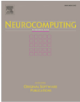</a>
</figure>
<p data-page="1" id="section-5">LabanFormer: Multi-scale graph attention network and transformer with gated recurrent positional encoding for labanotation generation</p>
<p data-page="1">Min Li a,⇑ , Zhenjiang Miao b , Yuanyao Lu a</p>
<p data-page="1">a School of Information Science and Technology, North China University of Technology, Beijing, China</p>
<p data-page="1">b Institute of Information Science, Beijing Jiaotong University, Beijing, China</p>
<figure data-page="1"><a data-image-zoom="" href="assets/0009-picture.png"></a>
</figure>
<h2 data-page="1" id="section-10">Article info</h2>
<p data-page="1">Article history: Received 24 October 2022 Revised 7 February 2023 Accepted 28 March 2023 Available online 31 March 2023</p>
<p data-page="1">Communicated by Zidong Wang</p>
<p data-page="1">2020 MSC: 00-01</p>
<p data-page="1">99-00</p>
<p data-page="1">Keywords: Labanotation generation Graph attention network Gated recurrent positional encoding</p>
<p data-page="1">Transformer</p>
<h2 data-page="1" id="section-17">Abstract</h2>
<p data-page="1">Labanotation is a widely-used notation system for recording human dance movements. Automatically generating Labanotation scores from motion capture data can save significant manual effort and help the preservation of old folk dances in protecting intangible cultural heritages. Existing Labanotation generation methods have limited ability to capture the flexible limb movements as well as the rich periodic, symmetric, or repeated dance steps. In this paper, we present a novel LabanFormer model including a Multi-Scale Graph Attention network (MS-GAT) and a transformer model with Gated Recurrent Positional Encoding (GRPE) to achieve more effective Labanotation generation. First, the proposed MSGAT can capture flexible limb movements by learning feature correlations between every two joints and aggregating features of neighboring joints over multiple scales. Second, we propose a new GRPEbased transformer to learn global temporal dependencies in the output feature sequences of MS-GAT. The novel GRPE module can encode position information with learnable parameters while handling various sequence lengths. As such, the periodic, symmetric, or repeated steps in dances can be accurately captured. Finally, the corresponding Laban symbols are generated by the decoder of the GRPE-based transformer. Extensive experiments on two real-world datasets show that the proposed LabanFormer model obtains remarkable performance compared with state-of-the-art approaches on the automatic Labanotation generation task.</p>
<p data-page="1">© 2023 Elsevier B.V. All rights reserved.</p>
<h2 data-page="1" id="section-20">1. Introduction</h2>
<p data-page="1">Labanotation [1,2] is one of the most widely-used notation systems to record human dance movements in the education, communication, and preservation of dances. Recording traditional folk dances with Labanotation scores is a good means of protecting the intangible cultural heritages. Although many recording methods including word description, figures, photography, and videos have been used in preserving dance performances, Labanotation is precise, effective, easy to store, as well as convenient for education and communication. Many computer-aided tools are developed to assist the writing of Labanotation scores [3-5]. However, manually writing Labanotation scores to record dances is still time-consuming and needs many efforts of trained professionals. Developing techniques of automatically generating Labanotation scores can make a great contribution to the protection of traditional folk dances.</p>
<p data-page="1">⇑ Corresponding author.</p>
<p data-page="1">E-mail addresses: limin@ncut.edu.cn (M. Li), zjmiao@bjtu.edu.cn (Z. Miao), luyy@ncut.edu.cn (Y. Lu).</p>
<p data-page="1">0925-2312/© 2023 Elsevier B.V. All rights reserved.</p>

<p data-page="1">A popular way of automatic Labanotation generation is to recognize a series of Laban symbols from motion capture data and then organize the symbols into Labanotation scores along with the time order. The motion capture data is obtained by motion capture devices and represented by a sequence of skeletal data frames, where each frame contains the data of a static skeletal pose, saved in the BVH format [6].</p>
<p data-page="1">Different from general action recognition tasks based on skeletal data [7,8] that interpret a series of human body movements with one action label, the task of generating Labanotation scores is to generate a sequence of symbol labels from a sequence of dance movements, which can be seen as a sequence-to-sequence task. Therefore, we need to capture the temporal dynamics and learn alignments between input and output sequences. In addition, following the Labanotation system definitions, every movement of each individual body part needs to be represented with a Laban symbol [2]. For example, a high-level human action walk needs to be recorded using multiple Laban symbols that describes the direction of each step of corresponding lower limb (left-legforward-middle, right-leg-forward-middle, . . .) while the gestures of upper limbs are also described by other symbols. Therefore, a more fine-grained movement analysis needs to be performed for the automatic generation of Labanotation.</p>
<div class="page-marker" id="page-2"><a href="source.pdf#page=2" rel="noopener" target="_blank">PDF p. 2</a></div>
<p data-page="2">To clarify our task, we first briefly introduce the Labanotation system. Fig. 1 (a) shows an example of a Labanotation score that usually uses a vertical three-line staff where symbols are written in the columns. Each column represents a body part, and each symbol in the column describes one movement of that body part. For example, the score in Fig. 1 (a) records the movements of lower limbs in the two support columns and the gestures of upper limbs in the two arm columns. On each page, the symbols are written from bottom to top following the temporal order.</p>
<p data-page="2">Among the symbols defined in the Labanotation system, the direction symbols are the most important ones. As shown in Fig. 1 (b), the spatial movement of a body part can be divided into 8 main horizontal directions and 3 vertical levels. It should be noted that the central place symbol in the figure indicates that a body part is still (not moving to anywhere) and is not counted in the movement description. Therefore, there are 8 × 3 = 24 direction symbols describing the moving procedure of each body part, which are the key generation targets of this work.</p>
<p data-page="2">Fig. 2 (a) shows the corresponding relationship between columns of the Labanotation score and human body parts. Symbols in each column describe a part of body separately. Among these columns, the most often used ones are the support columns and the arm columns, as shown in Fig. 1 (a). Especially, the support columns of the Labanotation score describe how the center of gravity of the body is moving in a step, which is fundamental and vital in dance performance. Fig. 2 (b) shows two different weight transferring procedures (both from A to D), and the corresponding direction symbols in the support columns [2].</p>
<p data-page="2">In the support columns, there are 24 × 2 direction symbols for both sides of the body. Numerous researches focusing on Labanotation generation in the support columns have been published. Early methods [9-13] perform spatio-temporal movement analysis based on artificially designed rules to generate Laban symbols from skeletal motion capture data. However, their application scenes are restricted due to the limitation of handcrafted rules.</p>
<p data-page="2">To overcome the limitation of handcrafted rules, a series of methods consisting of two stages are proposed, which first perform movement segmentation, and then recognize the motion segments via conventional statistical learning methods or deep neural networks. Algorithms proposed for the recognition step include template matching [14], hidden Markov models [15,16], Extreme Learning Machine algorithm [17], bidirectional Long Short Term Memory (BiLSTM) [18], bidirectional Gated Recurrent Unit (BiGRU) [19], aggregation of LSTM and LieNet networks [20], and Convolutional Neural Network (CNN) [21]. Furthermore, to save the time and efforts of manually segmenting motion sequences, two recent Labanotation generation frameworks [22,23] employ autosegmentation algorithms to replace manual work. However, the errors in the segmentation stage will significantly affect the performance of Labanotation generation.</p>
<p data-page="2">To further optimize the generation procedure of Labanotation scores and eliminate errors, one-stage methods [24-29] are proposed. Without the segmentation step, the one-stage methods directly learn correspondences between the target Laban symbol sequence and the input motion capture data sequence. Xie et al. [25,29] adopt Connectionist Temporal Classification (CTC) [30,31] to convert the per-frame skeletal motion features obtained by Convolutional Recurrent Neural Networks (CRNNs) or a double-stream fusion framework of directed graph neural networks (DFGNN) to Laban symbol sequences. Li et al. [24,26-28] propose a series of sequence-to-sequence (seq2seq) learning methods based on recurrent neural networks (RNNs) to generate Labanotation scores from continuous motion capture data sequences, where the skeletal motion features are extracted via CNNs, CRNNs, or graph convolutional networks (GCNs) [32,33].</p>
<p data-page="2">The above-stated one-stage methods provide a compact solution to Labanotation generation and avoid the errors from segmentation, but they have limit ability to capture flexible limb movements and complex dance steps, such as periodic, symmetric, or repeated steps. First, most dances contain flexible limb movements and the Labanotation system requires fine-grained analysis of joint movements of each body part. However, existing methods use feature extraction networks such as CRNN [25-27], DFGNN [29] and GS-GCN [28] that share weights over multiple joints and only consider the nearest neighboring joints without looking at bigger scales, which may leave out important information for capturing flexible limb movements. Second, dances usually contain complex dance steps. For example, the direction of dance steps in two consecutive beats can be opposite while being symmetric to each other. However, existing methods using recurrent neural networks sequentially learn successive time states, which may miss the temporal dependencies between different non-adjacent time states in periodic, symmetric, or repeated dance steps.</p>
<figure data-page="2"><a data-image-zoom="" href="assets/0035-picture.png"></a>
<figcaption>Fig. 1. Illustration of the Labanotation score and symbols. (a) A three-page Labanotation score example. The symbols are organized vertically frombottom to top in the threeline staff to describe the body movements. Each column represents a specific body part. In this example, only the leg movements in the support columns and arm gestures in the arm columns are shown. (b) The spatial direction symbols of Labanotation. There are 8 directions for each body part (the Forward and Backward symbols have different shapes for two body sides). The shading of a direction symbol indicates the level of movement (low, middle, and high).</figcaption>
</figure>
<div class="page-marker" id="page-3"><a href="source.pdf#page=3" rel="noopener" target="_blank">PDF p. 3</a></div>
<figure data-page="3"><a data-image-zoom="" href="assets/0037-picture.png">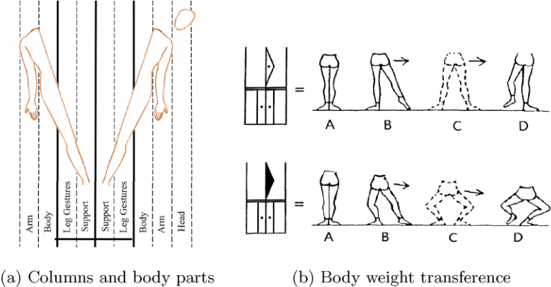</a>
<figcaption>Fig. 2. More illustration of the Labanotation system. (a) The corresponding relationship between columns of the Labanotation score and human body parts. (b) Examples of body weight transference in a step and the corresponding direction symbols in the support columns (figure from [2]).</figcaption>
</figure>
<p data-page="3">In this paper, we propose a new LabanFormer model containing two components, a Multi-Scale Graph Attention network (MS-GAT) and a Gated Recurrent Positional Encoding (GRPE) based transformer. To capture flexible limb movements in detail and generate precise Laban symbols based on body-parts level motion analysis, we propose a new MS-GAT module to learn feature correlations between joints. Different from the vanilla GAT in [34], the proposed MS-GAT can attend over bigger scales and aggregate features of neighboring joints in multiple scales for a better grasp of limb movements. Then, to capture the rich periodic, symmetric, or repeated moving steps in dances, we propose a GRPE-based transformer model that can learn global temporal dependencies in the output feature sequences of MS-GAT. Different from the standard transformer model [35] that uses a handcrafted sinusoidal function for positional encoding, the proposed GRPE-based transformer encodes positional information with compact learnable hidden parameters and can handle various sequence lengths as well as more complex dance steps. Finally, the decoder of the GRPEtransformer generates sequences of Laban symbols corresponding to the input data. In this way, the Labanotation scores of dances can be generated automatically and effectively from motion capture data sequences. Extensive experiments on two large-scale datasets show that the proposed model can obtain superior performance compared with existing methods including both two-stage methods and one-stage methods.</p>
<p data-page="3">The rest of this paper is organized as follows. Section 2 describes the proposed LabanFormer model in detail. Section 3 presents all the experimental results and discussions. Finally, Section 4 concludes the whole paper.</p>
<h2 data-page="3" id="section-41">2. LabanFormer</h2>
<h3 data-page="3" id="section-42">2.1. Overview</h3>
<p data-page="3">Our objective is to generate sequences of corresponding Laban direction symbols in the support columns from motion capture data sequences. The overall procedure of the proposed LabanFormer is summarized in Fig. 3. First, the motion capture data is fed into the proposed Multi-Scale Graph Attention network (MS- GAT). Then, we learn feature correlations of joints in each data frame at different scales with the new MS-GAT module for a better grasp of flexible limb movements in dances. Finally, we use the proposed Gated Recurrent Positional Encoding (GRPE) based transformer to learn the global temporal dependencies in the motion feature sequences output by MS-GAT and sequentially generate the corresponding Laban symbols that can precisely describe the dance movements. With the generated symbols, the Labanotation score of a piece of dance can be obtained by arranging the Laban symbols along the dance timeline. In this way, we can achieve the goal of automatically generating Labanotation scores from motion capture data. Detailed descriptions for the data model and the proposed method are as follows.</p>
<h3 data-page="3" id="section-44">2.2. Motion capture data model</h3>
<p data-page="3">The motion capture system records human dance movements in the Bio-vision hierarchical (BVH) format [6]. The BVH files record human body movements with multiple data frames, while each frame contains a static pose represented by a 26-joint human skeleton model. Fig. 4 shows the skeleton model used in our motion capture system. The location of each joint is recorded with relative translation and rotation represented with bone lengths and Euler angle in the local coordinate system of the precursor joint.</p>
<p data-page="3">To obtain clearer motion capture data representation and suppress noises, we use the same data preprocessing strategy including coordinate transformation and normalization as in [28]. First, the Euler angle representation in the hierarchical structure is converted to straight-forward 3D coordinate representation. Then, two kinds of normalization operations, i.e., relative value normalization and orientation normalization to obtain a good representation of motion data.</p>
<p data-page="3">The processed motion data sequence for a piece of dance is represented with fp 1 ; p 2 ; . . . ; p t ; . . . ; p L g, where p t denotes the frame data at time t and L is the length of sequence. Denoting J i as a joint in the t-th frame and ri as the raw feature vector of J i ; p t can be represented as the concatenation of joint features: p t = concatðr1; r2; . . . ; rNÞ, where N is the number of joints in each frame and N = 26. Since the raw joint feature is represented with 3D coordinates, the dimension of ri is 3. Therefore, the dimension of each motion data frame p t is 26  3 = 78.</p>
<div class="page-marker" id="page-4"><a href="source.pdf#page=4" rel="noopener" target="_blank">PDF p. 4</a></div>
<figure data-page="4"><a data-image-zoom="" href="assets/0048-picture.png">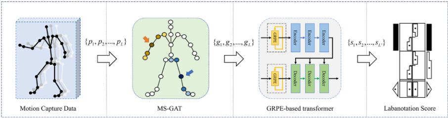</a>
<figcaption>Fig. 3. Illustration of the overall method. The motion capture data sequence fp 1 ; p 2 ; . . . ; p L g is fed into the Multi-Scale Graph Attention network (MS-GAT). Then, the output sequence fg 1 ; g 2 ; . . . ; g L g of MS-GAT is fed into the Gated Recurrent Positional Encoding (GRPE) based transformer. Finally, the sequence of output Laban symbol fs1; s2; . . . ; sL 0 g composes the generated Labanotation score.</figcaption>
</figure>
<figure data-page="4"><a data-image-zoom="" href="assets/0050-picture.png">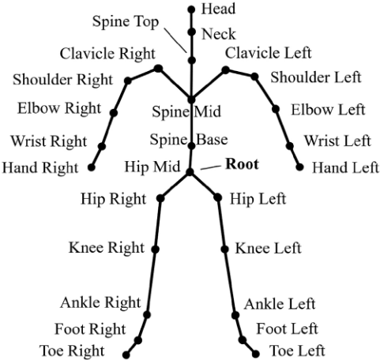</a>
<figcaption>Fig. 4. Illustration of the 26-joint skeletonmodel. Names of joints are labeled in the figure and the Hip Mid joint is the root of the hierarchical structure.</figcaption>
</figure>
<p data-page="4">In the LabanFormer model, the MS-GAT module takes in motion data sequence fp 1 ; p 2 ; . . . ; p L g and output a sequence of motion features, denoted as fg 1 ; g 2 ; . . . ; g L g. Then, the feature sequence is fed into the GRPE-based transformer model. The final output is a sequence of symbol labels that can be denoted as fs1; s2; . . . ; sL 0 g, where L 0 is the output sequence length, different from the input length L.</p>
<h3 data-page="4" id="section-53">2.3. Multi-scale graph attention network</h3>
<p data-page="4">In the proposed LabanFormer model, we first propose a novel multi-scale graph attention neural network (MS-GAT) to capture flexible limb movements. MS-GAT learns the feature correlations between joints and aggregates the features of joints with an attention mechanism performed not only between adjacent joints but also between joints connected over further distances. Different from learning the attention weights between any two joints, we take into account the graph structure and compute more meaningful spatial attention weights. The attention computation procedure between two joints is illustrated in Fig. 5 and the feature aggregation procedure is shown in Fig. 6. Detailed descriptions are as follows.</p>
<p data-page="4">First of all, to learn fine-grained feature correlations, we compute the attention coefficients between a joint J i and each joint in its neighborhood, as shown in Fig. 5. A neighboring joint J j may affect the feature of J i in different ways. We employ a learnable linear attention weight eij to describe the influence of joint J j 's feature to joint J i 's feature.</p>
<p data-page="4">Assuming that the raw feature of joint J i and J j are ri and rj, respectively, to improve the describing ability of features, we first employweight matricesWi andWj to performa transformation on the raw features and obtain higher-level features vi and vj:</p>
<figure data-page="4"><a data-image-zoom="" href="assets/0057-formula.png">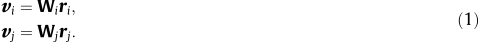</a>
</figure>
<p data-page="4">For each joint J i , denoting the dimension of raw feature ri as dr and the dimension of feature vi as dv , the feature transformation weight Wi is of dimension dv -dr.</p>
<p data-page="4">Then, taking vi and vj as the input features of attention mechanism and cij as the output coefficient of the attention mechanism over joint J i and J j , the attention computation can be described as:</p>
<figure data-page="4"><a data-image-zoom="" href="assets/0060-formula.png">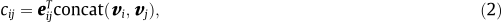</a>
</figure>
<p data-page="4">where concat denotes a concatenation operation and T denotes the transpose operation. The linear attention weight eij is of dimension 2dv , and cij is a scalar.</p>
<p data-page="4">Next, we apply an activation function Δ to the coefficient cij for the non-linearity of the network, and we normalize cij over all neighboring joints with the softmax function for the feasibility to compare the feature of different joints. It should be noted that the indices of neighboring joints are selected using the skeleton graph. Denoting the set of first-order neighbors of joint J i as N 1 i , where the superscript 1 represents that the order of neighbors is 1, we can compute the normalized attention coefficient c 0 ij as:</p>
<figure data-page="4"><a data-image-zoom="" href="assets/0063-formula.png">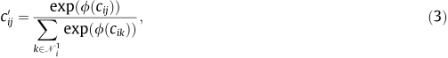</a>
</figure>
<p data-page="4">where for Δ we choose the LeakyReLU [36] function:</p>
<figure data-page="4"><a data-image-zoom="" href="assets/0065-formula.png">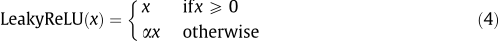</a>
</figure>
<p data-page="4">It should be noted that the x here represents any input of the function and is different from other x symbols in this paper. α is a slope parameter with the value set to 0:01.</p>
<p data-page="4">Now, for joint J i , we have the attention coefficient c 0 ij of each neighboring joint J j . We can perform feature aggregation by adding up the weighted features of each joint J j . Therefore, the first-order aggregated feature a 1 i of joint J i is:</p>
<div class="page-marker" id="page-5"><a href="source.pdf#page=5" rel="noopener" target="_blank">PDF p. 5</a></div>
<figure data-page="5"><a data-image-zoom="" href="assets/0068-picture.png"></a>
<figcaption>Fig. 5. To learn fine-grained feature correlations, we compute the attention coefficients between two joints. ri and rj are raw features of joints J i and J j ; vi and vj are features transformed via weight matrices Wi and Wj , as described in (1). The different colors of joints represent different joint features. cij is the attention coefficient computed from the matrix multiplication between concatenated features ½vi ; vj Š and a linear weight eij . And c 0 ij is the normalized attention coefficient using the softmax function. The twojoint attention computation is described in (2) and (3).</figcaption>
</figure>
<figure data-page="5"><a data-image-zoom="" href="assets/0070-picture.png">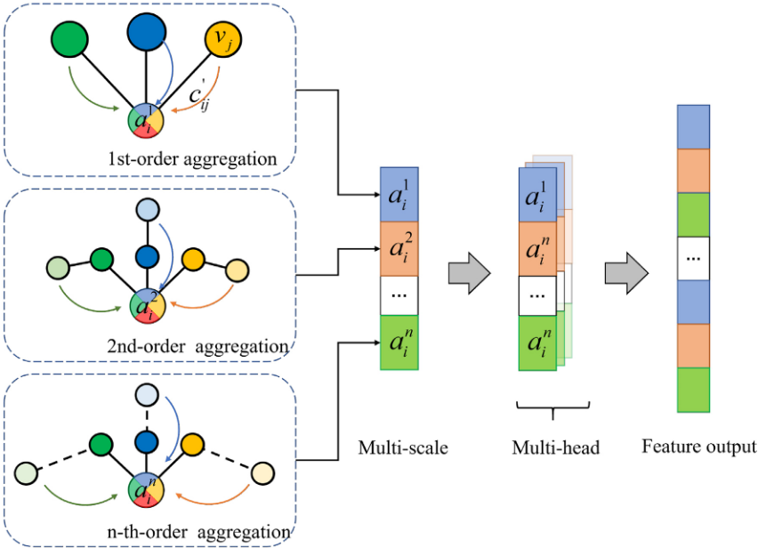</a>
<figcaption>Fig. 6. To capture flexible limb movements, we learn feature correlations between joints and aggregate joint features at multiple scales with a graph attention mechanism. This figure shows the multi-scale feature aggregation and multi-head concatenation.</figcaption>
</figure>
<figure data-page="5"><a data-image-zoom="" href="assets/0072-formula.png">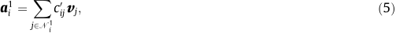</a>
</figure>
<p data-page="5">where the dimensions of vj and a 1 i are both dv . The superscript 1 denotes that the feature is aggregated from first-order neighbors.</p>
<p data-page="5">Furthermore, to capture flexible limb movements in dances, we propose to aggregate the features of joints at a bigger scale to cover more joints on the same limb. The scale of attention mechanism can be extended by learning attention coefficients between joints that are connected over further distances, as shown on the left side of Fig. 6. In the skeleton graph, the distance between two joints can be 2; 3; 4, or even bigger. When we take the n-th order neighbors into account and compute the attention at bigger scales, we can establish a set of n-th order neighboring joints N n i based on the skeleton graph. By performing the computation of equations from (2)-(4), the n-th order aggregated feature a n i can be obtained.</p>
<p data-page="5">To combine the features aggregated at different scales, we perform a concatenation on the features and then apply a non-linear function ELU [37], as follows:</p>
<figure data-page="5"><a data-image-zoom="" href="assets/0076-formula.png">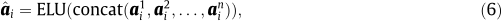</a>
</figure>
<p data-page="5">where ^ ai is the obtained multi-scale aggregated feature of joint J i . The ELU function is:</p>
<div class="page-marker" id="page-6"><a href="source.pdf#page=6" rel="noopener" target="_blank">PDF p. 6</a></div>
<p data-page="6">M. Li, Z. Miao and Y. Lu</p>
<figure data-page="6"><a data-image-zoom="" href="assets/0079-formula.png">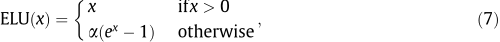</a>
</figure>
<p data-page="6">where x denotes the input of function. α is a slope parameter and we set α = 1.</p>
<p data-page="6">In practice, faraway joints tend to have little influence on the current joint. Therefore, we only consider first- and second-order neighboring joints in the multi-scale attention computation and n = 2. Experiments on the selection of different orders are in Section 3.</p>
<p data-page="6">In addition, to extract more information, we perform multihead attention by carrying out m independent feature aggregation procedures and concatenating all the results, as shown on the right side of Fig. 6. The final output multi-head multi-scale feature a mhms i of joint J i is:</p>
<figure data-page="6"><a data-image-zoom="" href="assets/0083-formula.png">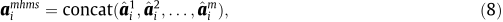</a>
</figure>
<p data-page="6">where the superscript mhms denotes multi-head multi-scale. The dimension of the final output feature of each joint (a mhms i ) is dv  n  m.</p>
<p data-page="6">The features of all skeletal joints at each time step form the feature of the motion data frame. As denoted in Section 2.2, the frame feature vector at time t is g t . Denoting the number of joints in the graph as N, the dimension of g t can be represented as dframe = N  dv  n  m. The final output of the MS-GAT module is a sequence of motion feature frames fg 1 ; g 2 ; . . . ; g L g, where L denotes the sequence length.</p>
<p data-page="6">In this subsection, we introduce a novel multi-scale graph attention neural network (MS-GAT) to aggregate the features of joints with an attention mechanism. In practice, we aggregate both the first-order and second-order neighbors of joints in the graph to learn structured wide-range spatial information. As such, we can get a robust and effective representation of skeletal motion data, which will benefit the learning of flexible limb movements.</p>
<h3 data-page="6" id="section-87">2.4. Gated recurrent positional encoding based transformer</h3>
<p data-page="6">In the proposed LabanFormer model, the MS-GAT module takes in motion capture data sequences and outputs corresponding sequences of motion features. To learn the temporal dependencies in the motion feature sequences from MS-GAT, we propose a novel Gated Recurrent Positional Encoding (GRPE) based transformer model, consisting of a GRPE module to encode the positional information of input data sequences and an encoder-decoder network to learn and transform the motion feature sequences to Laban symbol sequences. To our knowledge, the new GRPE-based transformer is the first transformer-related method that is specifically designed for Laban movement analysis and Labanotation generation. The overall procedure of the proposed GRPE-based transformer is illustrated in Fig. 7.</p>
<p data-page="6">The input of GRPE-based transformer is the output motion feature sequences of MS-GAT, denoted by fg 1 ; g 2 ; . . . ; g L g. Denoting the positional encoding function as P and the encoder-decoder network as U, we can represent the whole processing procedure of GRPE-transformer as:</p>
<figure data-page="6"><a data-image-zoom="" href="assets/0090-formula.png">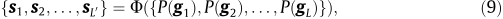</a>
</figure>
<p data-page="6">where sequence fs1; s2; . . . ; sL 0 g is the output of GRPE-based transformer, as described in Section 2.2. The positional encoding function is important since it provides the feature order information for temporal dependency learning in the encoder-decoder network. In this work, we focus on the positional encoding module to improve the ability of the transformer model for handling various sequence lengths and capturing complex dance steps. Detailed descriptions of the GRPE module and encoder-decoder network are as follows.</p>
<h4 data-page="6" id="section-92">2.4.1. The GRPE module</h4>
<p data-page="6">Different from the previous transformer models that use handcrafted sinusoidal functions [35] or fixed-length embedding parameters [38] for positional encoding, we propose to use a unidirectional recurrent model to learn the position information of input sequences. We consider that a recurrent function is better than handcrafted functions since it is data-driven and can be trained to fit better for complex dance motion data. Besides, recurrent units can process sequences of variable lengths and learn positional information by updating the hidden parameters at each time step, which overcomes the limitation of fixed-length positional embedding parameters.</p>
<p data-page="6">To be more specific, we employ a layer of recurrent neural network (RNN) with gated recurrent units (GRUs) [39] for positional encoding before the input data is fed into the encoders and decoders, as shown in Fig. 7.</p>
<figure data-page="6"><a data-image-zoom="" href="assets/0095-picture.png"></a>
<figcaption>Fig. 7. The overall structure of the GRPE-based transformer model for learning temporal dependencies frommotion capture data and generating Laban symbols. The Gated Recurrent Positional Encoding (GRPE) module is proposed to deal with the positional encoding of variable sequence lengths. GRPE employs a recurrent neural network to encode positional information into the updated feature sequence fx1; x2; . . . ; xLg by learning the hidden parameters ht . The output sequence fy 1 ; y 2 ; . . . ; y L g is fed into the encoder-decoder network, where the encoders and decoders are built based on the self-attention mechanism.</figcaption>
</figure>
<div class="page-marker" id="page-7"><a href="source.pdf#page=7" rel="noopener" target="_blank">PDF p. 7</a></div>
<p data-page="7">As described in Section 2.3, the dimension of each motion feature frame g t is dframe. For the input g t , we first employ a linear embedding layer to shrink the feature channels for a more compact representation:</p>
<figure data-page="7"><a data-image-zoom="" href="assets/0098-formula.png">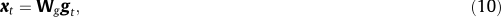</a>
</figure>
<p data-page="7">where xt denotes the updated feature, which is the input of the recurrent layer at each time step. Wg is a weight matrix. Denoting the dimension of xt as dx, the dimension of Wg is dx -dframe.</p>
<p data-page="7">The GRU-based RNN layer has a hidden parameter h that will be updated at each time step t based on the input xt. The recurrent update procedure of h from t − 1 to t can be described as:</p>
<details class="source-recovery"><summary>Some PDF symbols could not be decoded — view original paragraph</summary><figure><a data-image-zoom="" href="assets/0100-check-symbols.png">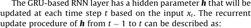</a></figure></details>
<figure data-page="7"><a data-image-zoom="" href="assets/0101-formula.png">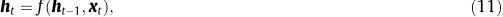</a>
</figure>
<p data-page="7">where f is a non-linear function.</p>
<p data-page="7">To implement function f, we employ the gated recurrent unit (GRU) proposed in [39], which consists of a reset gate r and an update gate z, computed by:</p>
<figure data-page="7"><a data-image-zoom="" href="assets/0104-formula.png">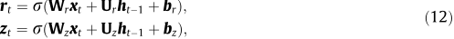</a>
</figure>
<p data-page="7">where σ is the logistic sigmoid function, W and U are weight matrices, and b is the bias parameter. Denoting the dimension of the hidden parameter h as dh, we can represent the dimensions of all the W as dh - dx. U is of dimension dh - dh and b is of dimension dh.</p>
<p data-page="7">Therefore, the update function f of hidden state h can be implemented by:</p>
<p data-page="7">~</p>
<figure data-page="7"><a data-image-zoom="" href="assets/0108-formula.png">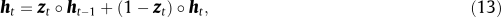</a>
</figure>
<p data-page="7">where</p>
<figure data-page="7"><a data-image-zoom="" href="assets/0110-formula.png">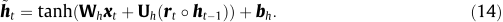</a>
</figure>
<p data-page="7">Here  denotes the point-wise multiplication. Dimensions of rt ; zt ; ~ ht and ht are all dh.</p>
<p data-page="7">Finally, the output y t of the GRU layer at each time step is:</p>
<figure data-page="7"><a data-image-zoom="" href="assets/0113-formula.png">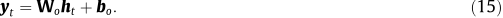</a>
</figure>
<p data-page="7">Denoting the dimension of y t as dy, the matrix Wo is of dimension dy -dh and bo is of dimension dy.</p>
<p data-page="7">The gate mechanism helps to relieve the gradient vanishing problem in vanilla RNNs, so that GRU-based RNN can handle longer positional information. At each time step t, with the recurrent update by Eqs. (11)-(14), the hidden state ht accumulates the information of previous inputs fx1; x2; . . . ; xtg. Therefore, the output y t at each time step can be seen to contains the positional information in an implicit form. The output sequence encoded by GRPE module can be represented as fy 1 ; y 2 ; . . . ; y L g, which is of length L. Since the dimension of each y t is dy, the whole output sequence of the GRPE module can be seen as a matrix S of dimension L - dy.</p>
<h4 data-page="7" id="section-116">2.4.2. The encoder-decoder network</h4>
<p data-page="7">After encoding the input sequence with positional information using GRPE modules, we can feed the processed sequence to the encoder-decoder network for temporal modeling and target sequence generation. The two GRPE modules before the encoders and decoders are in the same structure, but they do not share the same weights. Detailed structures of the encoder and the decoder are shown in Fig. 8. Both the encoder and decoder layers contain multi-head self-attention modules and feed-forward networks. Residual connections and layer normalization are also applied. In the decoder layer, there is another multi-head attention module that receives encoder outputs. The encoders and decoders can be stacked multiple times to obtain deeper representations.</p>
<p data-page="7">The key component of both encoder and decoder is the multihead attention module based on the self-attention mechanism, which explicitly models the relationships between every two temporal states of a sequence to learn global temporal dependencies.</p>
<p data-page="7">To be more specific, we employ the scaled dot-product attention form in [35], as illustrated in the first row of Fig. 9. The selfattention computation is based on three inputs: queries, keys, and values, represented with Q; K, and V. Since we are performing the self-attention, all the query, key, and value are transformed from the same input sequence itself. First, we do a feature channel transformation to resize each feature frame of the input sequence to a new dimension dmodel. With the matrix representation of the positional-encoded sequence as S, we can transform it to a new representation R by a linear weight matrix Wr:</p>
<figure data-page="7"><a data-image-zoom="" href="assets/0120-formula.png">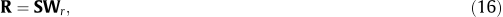</a>
</figure>
<p data-page="7">where R is of dimension L -dmodel and Wr is of dy -dmodel.</p>
<p data-page="7">Then, the three inputs Q; K, and V to the self-attention module are obtained via three weight matrices:</p>
<figure data-page="7"><a data-image-zoom="" href="assets/0123-formula.png">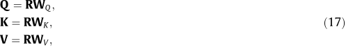</a>
</figure>
<p data-page="7">where WQ is of dimension dmodel -dQ ;WK of dmodel -dK, and WV of dmodel -dV . Normally, we set dQ = dK = dV = dmodel=nhead, where nhead is the head number of multi-head attention. Thus, the attention weight a self is computed as the dot-product of queries Q and keys K, then normalized with a scalar ffiffiffiffiffi dV p and the softmax function, as follows:</p>
<figure data-page="7"><a data-image-zoom="" href="assets/0125-formula.png">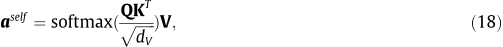</a>
</figure>
<p data-page="7">where the subscript self represents that a self is a self-attention weight. T denotes the transpose operation. We can know that the dimension of a self is L -dV .</p>
<p data-page="7">In this way, each time state of the input sequence can be represented with weighted values. In addition, when the self-attention computation is carried out in a decoding operation along the time axis, where future information should not be taken into account at each time t, a mask should be applied to the dot-product computation.</p>
<p data-page="7">Then, to obtain more information and improve the model representation ability, the attention computation is repeated by nhead times and the results are concatenated to form a multi-head attention output:</p>
<figure data-page="7"><a data-image-zoom="" href="assets/0129-formula.png">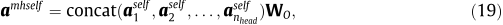</a>
</figure>
<p data-page="7">where WO is an additional weight matrix of dimension dVnhead -dmodel, implemented with a fully-connected feed-forward layer. a mhself denotes the multi-head self-attention output which is of dimension L - dmodel . The multi-head attention computation procedure is depicted in the second row of Fig. 9.</p>
<p data-page="7">Then, with the described multi-head attention module and other auxiliary parts, the encoder-decoder network is constructed as previously introduced. Finally, using a greedy strategy that outputs the label with the biggest probability, the decoder generates a sequence of Laban symbols, which is the output sequence described in Section 2.2 as fs1; s2; . . . ; st ; . . . ; sL 0 g, where st denotes the Laban symbol at time t, and L 0 is the length of the output sequence.</p>
<p data-page="7">In this sub-section, we introduce the proposed GRPE-based transformer model for translating motion feature sequences to Laban symbols. The novel GRPE module learns the positional information of input sequences in a flexible manner, and the selfattention-based encoder-decoder network learns global temporal dependencies in the motion feature sequences. In this way, the complex periodic, symmetric, or repeated step movements in dances can be effectively captured.</p>
<div class="page-marker" id="page-8"><a href="source.pdf#page=8" rel="noopener" target="_blank">PDF p. 8</a></div>
<figure data-page="8"><a data-image-zoom="" href="assets/0133-picture.png">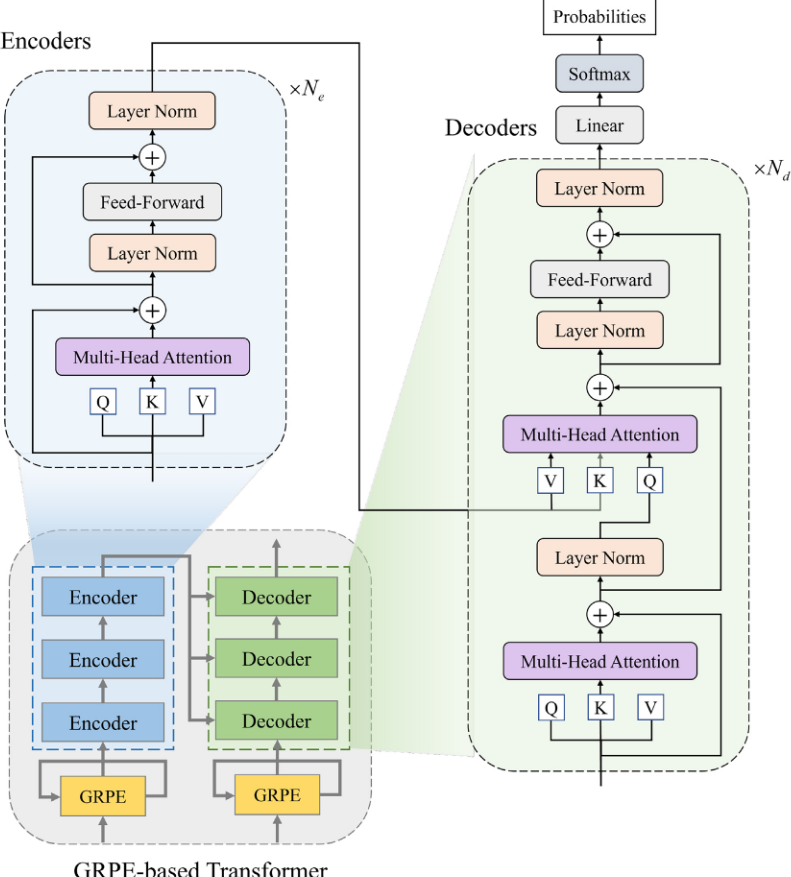</a>
<figcaption>Fig. 8. The encoder-decoder network in the GRPE-based transformer model takes in position-encoded motion feature sequences and generates Laban symbols.</figcaption>
</figure>
<h2 data-page="8" id="section-135">3. Experiments</h2>
<p data-page="8">We evaluate the proposed LabanFormer model on two widelyused skeletal motion sequence datasets LabanSeq16 and LabanSeq48. Compared with both existing two-stage methods (using automatic segmentation) and one-stage methods, our proposed method shows favorable results. In addition, we present ablation study and parameter discussions. Details are as follows.</p>
<h3 data-page="8" id="section-137">3.1. Experimental setup</h3>
<h4 data-page="8" id="section-138">Datasets:</h4>
<p data-page="8">For automatic Labanotation generation, there are two datasets LabanSeq16 and LabanSeq48 containing skeletal motion capture sequences, widely used in [23-29]. The two datasets are captured by the OptiTrack TM [40] motion capture system at a sampling rate of 150 frames per second. The motions in these datasets are performed by four volunteers with different body sizes in four different viewpoints to offer data variations. Each motion sequence is labeled with corresponding Laban symbols. A brief overview of the dataset properties is shown in Table 1.</p>
<p data-page="8">From the table, we can see that LabanSeq16 contains movements of the two lower limbs in 8 directions at the middle level, which can be represented with 16 Laban direction symbols. Meanwhile, LabanSeq48 also covers high and low levels in addition to the middle level. In the LabanSeq48 dataset, the spatial movement of a lower limb can be divided into 8 horizontal directions and 3 vertical levels, thus there are 48 Laban symbols describing the movements of the two lower limbs. The two datasets contain 1600 and 4800 motion capture data sequences, respectively, and each motion sequence in the datasets generally contains three to eight movements. In our experiments, we take 50% of each dataset as the training set and the rest as the test set, same as in [23-29].</p>
<p data-page="8">Evaluation Metric: For the evaluation metric of the Labanotation generation task, we use the accuracy of generating Laban symbols, as in [24,26-29]. Since the ground-truth labels and generated results are both symbol sequences, the differences between them can be measured with the edit distance, similar to the word error rate (WER) in speech recognition. Therefore, the symbol generation accuracy can be defined with 1-WER. For the two-stage methods of Labanotation generation [16,18,19], an additional segmentation stage is required to split continuous motion capture data into individual segments. For a fair performance comparison of fully automatic sequence generation, we employ the latest automatic motion segmentation algorithm [23] to generate the required segment data in the compared two-stage methods. In this way, we can evaluate the performance of a complete Labanotation generation procedure without human participation, which is closer to realworld application scenarios.</p>
<div class="page-marker" id="page-9"><a href="source.pdf#page=9" rel="noopener" target="_blank">PDF p. 9</a></div>
<figure data-page="9"><a data-image-zoom="" href="assets/0142-picture.png"></a>
<figcaption>Fig. 9. The multi-head self-attention module contains two components: The scaled dot-product self-attention mechanism (the first row) learns temporal dependencies between every two time steps, and the multi-head attention operation (the second row) can improve the model representation ability. Matrices Q; K, and V are computed by multiplying the input sequence and three weight matrices, as in (17). In the figure, the mask module is annotated with opt because it is a sequence mask that is only applied in the decoders..</figcaption>
</figure>
<figure data-page="9"><a data-image-zoom="" href="assets/0144-table.png">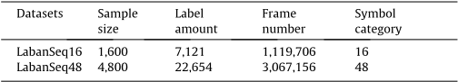</a>
<figcaption>Table 1 A brief overview of dataset properties.</figcaption>
</figure>
<details class="recognized-table"><summary>Recognized table text (check against the image)</summary><div class="table-scroll">
<table><caption><div class="caption">Table 1 A brief overview of dataset properties.</div></caption><tbody><tr><th>Datasets</th><th>Sample size</th><th>Label amount</th><th>Frame number</th><th>Symbol category</th></tr><tr><td>LabanSeq16</td><td>1,600</td><td>7,121</td><td>1,119,706</td><td>16</td></tr><tr><td>LabanSeq48</td><td>4,800</td><td>22,654</td><td>3,067,156</td><td>48</td></tr></tbody></table>
</div></details>
<p data-page="9">Implementation Details: In the proposed LabanFormer model, for MS-GAT, we use first- and second-order neighboring joints, while other parameters are m= 2 and dv = 8. For the GRPEbased transformer, we set parameters dx = dh = dy = 64 in GRPE, set nhead = 4 and dmodel = 128 in the self-attention mechanism, and use 10 encoders followed by 5 decoders in the encoderdecoder network. The selection of parameters will be discussed later. The whole LabanFormer model is implemented with PyTorch. All the experiments are conducted on Ubuntu 16.04 running on a workstation with two RTX 2080Ti GPUs.</p>
<h3 data-page="9" id="section-147">3.2. Experimental results and discussions</h3>
<p data-page="9">Comparison with the state-of-the-art methods: First, we evaluate the overall performance of the proposed method and compare it with existing Labanotation generation approaches, including both two-stage and one-stage methods. The symbol generation accuracies of all compared methods on two datasets are listed in Table 2. For the two-stage methods, the automatic segmentation step is implemented with the latest method proposed in [23], as explained above. We cite the results of existing methods on the LabanSeq16 dataset and obtain the results on the LabanSeq48 dataset via the available codes from original papers. The last two rows are the results of the proposed methods in this paper. Baseline transformer is a baseline model of our method, which refers to a standard transformer model proposed in [35] with the sinusoidal positional encoding methods and without the proposed MS-GAT module. LabanFormer denotes the proposed method in this paper, which consists of an MS-GAT and a GRPE-based transformer for automatic Labanotation generation.</p>
<p data-page="9">From Table 2, we can see that the proposed model obtains the best results on both datasets LabanSeq16 and LabanSeq48 compared with both existing two-stage and one-stage methods, which indicates that the new LabanFormer model is more suitable for generating Labanotation scores from motion capture data. The baseline transformer model with sinusoidal positional encoding outperforms the seq2seq methods proposed in [26-28], which shows the advantage of the self-attention mechanism of transformer that captures global temporal dependencies in motion sequences. Moreover, we can see that with the proposed MS-GAT and GRPE modules applied, the performance is further improved by about 2% on average. Next, we will discuss the detailed contributions of MS-GAT and GRPE to the overall performance with an ablation study.</p>
<figure data-page="9"><a data-image-zoom="" href="assets/0150-table.png">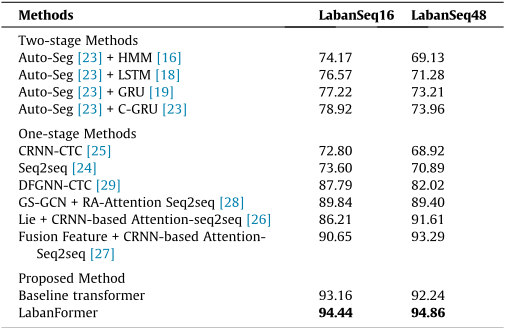</a>
<figcaption>Table 2 Comparison of different Labanotation generating methods on symbol generation accuracy (%). The best results are in bold.</figcaption>
</figure>
<details class="recognized-table"><summary>Recognized table text (check against the image)</summary><div class="table-scroll">
<table><caption><div class="caption">Table 2 Comparison of different Labanotation generating methods on symbol generation accuracy (%). The best results are in bold.</div></caption><tbody><tr><th>Methods</th><th>LabanSeq16</th><th>LabanSeq48</th></tr><tr><th>Two-stage Methods</th><td></td><td></td></tr><tr><th>Auto-Seg [23] + HMM [16]</th><td>74.17</td><td>69.13</td></tr><tr><th>Auto-Seg [23] + LSTM [18]</th><td>76.57</td><td>71.28</td></tr><tr><th>Auto-Seg [23] + GRU [19]</th><td>77.22</td><td>73.21</td></tr><tr><th>Auto-Seg [23] + C-GRU [23]</th><td>78.92</td><td>73.96</td></tr><tr><th>One-stage Methods</th><td></td><td></td></tr><tr><th>CRNN-CTC [25]</th><td>72.80</td><td>68.92</td></tr><tr><th>Seq2seq [24]</th><td>73.60</td><td>70.89</td></tr><tr><th>DFGNN-CTC [29]</th><td>87.79</td><td>82.02</td></tr><tr><th>GS-GCN + RA-Attention Seq2seq [28]</th><td>89.84</td><td>89.40</td></tr><tr><th>Lie + CRNN-based Attention-seq2seq [26]</th><td>86.21</td><td>91.61</td></tr><tr><th>Fusion Feature + CRNN-based Attention- Seq2seq [27]</th><td>90.65</td><td>93.29</td></tr><tr><th>Proposed Method</th><td></td><td></td></tr><tr><th>Baseline transformer</th><td>93.16</td><td>92.24</td></tr><tr><th>LabanFormer</th><td>94.44</td><td>94.86</td></tr></tbody></table>
</div></details>
<div class="page-marker" id="page-10"><a href="source.pdf#page=10" rel="noopener" target="_blank">PDF p. 10</a></div>
<p data-page="10">Ablation study: To further investigate the contribution of each component, i.e. the modules of MS-GAT and GRPE, in the proposed LabanFormer model, we conduct an ablation study with different model configurations. We set ① Sinusoidal PE as the baseline method, which denotes Sinusoidal Positional Encoding based transformer, the same as the Baseline transformer described in Table 2. GRPE represents a transformer model with the proposed gated recurrent positional encoding module but without the multiscale graph attention network. And MS-GAT + GRPE is the complete configuration of the proposed LabanFormer model. Then, we evaluate each model configuration with different components applied. The specified configurations and comparison results are shown in Table 3.</p>
<p data-page="10">From the table, by comparing the results of corresponding settings r vs s; t vs u, we can see that the proposed MS-GAT module can bring obvious improvements to the generation accuracy, which shows the superiority of the proposed MS-GAT in capturing flexible dance movements. Besides, by comparing r with t and s with u, we can clearly see the performance gain brought by the GRPE module. This shows the effectiveness of the proposed gated recurrent positional encoding method. Moreover, the bestperforming configuration (u) is the combination of MS-GAT and the GRPE-based transformer, showing that the two proposed components can work together and increase the overall model accuracy.</p>
<p data-page="10">Comparison with the method in [28]: In addition, we compare the proposed MS-GAT and GRPE-based transformer with the two</p>
<h4 data-page="10" id="section-155">Table 3</h4>
<figure data-page="10"><a data-image-zoom="" href="assets/0156-table.png">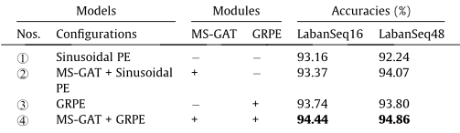</a>
<figcaption>Ablation study for the proposed model. The symbol ''+" means the corresponding module exists while ''−" means not. We can see that the proposed MS-GAT + GRPE based transformer obtains the best results. Comparisons between ③ and ①; ④ and ② both show the superiority of the proposed GRPE module. When comparing ② with ①, or ④ and ③, we can also see that the proposed MS-GAT module contributes to the generation performance.</figcaption>
</figure>
<details class="recognized-table"><summary>Recognized table text (check against the image)</summary><div class="table-scroll">
<table><caption><div class="caption">Ablation study for the proposed model. The symbol ''+" means the corresponding module exists while ''−" means not. We can see that the proposed MS-GAT + GRPE based transformer obtains the best results. Comparisons between ③ and ①; ④ and ② both show the superiority of the proposed GRPE module. When comparing ② with ①, or ④ and ③, we can also see that the proposed MS-GAT module contributes to the generation performance.</div></caption><tbody><tr><th colspan="2">Models</th><th colspan="2">Modules</th><th colspan="2">Accuracies (%)</th></tr><tr><th>Nos.</th><th>Configurations</th><th>MS-GAT</th><th>GRPE</th><th>LabanSeq16</th><th>LabanSeq48</th></tr><tr><td>①</td><td>Sinusoidal PE</td><td>−</td><td>−</td><td>93.16</td><td>92.24</td></tr><tr><td>②</td><td>MS-GAT + Sinusoidal PE</td><td>+</td><td>−</td><td>93.37</td><td>94.07</td></tr><tr><td>③</td><td>GRPE</td><td>−</td><td>+</td><td>93.74</td><td>93.80</td></tr><tr><td>④</td><td>MS-GAT + GRPE</td><td>+</td><td>+</td><td>94.44</td><td>94.86</td></tr></tbody></table>
</div></details>
<figure data-page="10"><a data-image-zoom="" href="assets/0158-picture.png">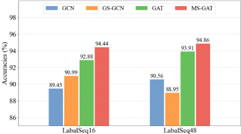</a>
<figcaption>Fig. 10. Comparison of accuracies (%) of different skeletal feature representations. GCN denotes the standard graph convolutional network and GS-GCN is the gesturesensitive GCN method proposed in [28]. GAT denotes the graph attention network, and MS-GAT is the proposed multi-scale GAT method. The other parts of the Labanotation generation algorithm are kept the same. We can see that GAT outperforms GCN on our task, and the proposed MS-GAT performs the best.</figcaption>
</figure>
<p data-page="10">components of the model in [28], respectively. First, we compare the proposed MS-GAT with graph convolutional network (GCN) and gesture-sensitive graph convolutional network (GS-GCN) proposed in [28] for the skeletal feature extraction in Labanotation generation. We replace the MS-GAT module with GCN and GSGCN, respectively, and evaluate the final Labanotation generation performance on both datasets of LabanSeq16 and LabanSeq48. The codes are from the original paper and the parameters of each network are adjusted for the best possible performance. Furthermore, the standard GAT (first-order neighbor of joints) is also taken into comparison. All the compared networks share the same input data and the remaining LabanFormer network structures are the same. Fig. 10 shows the comparison results on both datasets. From the figure, we can see that GAT outperforms GCN and GS-GCN on our task, and MS-GAT performs the best. This indicates that GATs and MS-GATs fit our task better than GCNs. A reason may be that,</p>
<figure data-page="10"><a data-image-zoom="" href="assets/0161-picture.png"></a>
<figcaption>Fig. 11. Comparison of accuracies (%) of different sequence generation models. Attention Seq2seq denotes the standard attention seq2seq model based on GRU-RNN networks and RA-Attention Seq2seq is the model proposed in [28]. Standard Transformer denotes the transformer network proposed in [35], and GRPE-based Transformer is the proposed model. The other parts of the Labanotation generation algorithm are kept the same. We can see that the transformer models outperform RNN-based se2seq models, and the proposed GRPE-based transformer model performs the best.</figcaption>
</figure>
<h4 data-page="10" id="section-163">Table 4</h4>
<p data-page="10">Comparison of accuracies (%) of MS-GAT modules aggregating features on different scales. Numbers in the first column represent the scale configuration, which indicates the joints at what distances are considered. For example, 1 + 2+3 denotes that the first-, second-, and third-order neighboring joints are taken into computation. The best results are in bold.</p>
<figure data-page="10"><a data-image-zoom="" href="assets/0165-table.png">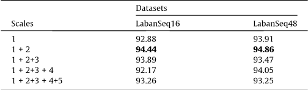</a>
</figure>
<details class="recognized-table"><summary>Recognized table text (check against the image)</summary><div class="table-scroll">
<table><tbody><tr><td>Scales</td><th>Datasets LabanSeq16</th><th>LabanSeq48</th></tr><tr><td>1</td><td>92.88</td><td>93.91</td></tr><tr><td>1 + 2</td><td>94.44</td><td>94.86</td></tr><tr><td>1 + 2+3</td><td>93.89</td><td>93.47</td></tr><tr><td>1 + 2+3 + 4</td><td>92.17</td><td>94.05</td></tr><tr><td>1 + 2+3 + 4+5</td><td>93.26</td><td>93.25</td></tr></tbody></table>
</div></details>
<figure data-page="10"><a data-image-zoom="" href="assets/0166-table.png">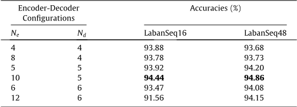</a>
<figcaption>Table 5 Comparison of accuracies (%) of different configurations of the encoder-decoder network in LabanFormer. The best results are in bold.</figcaption>
</figure>
<details class="recognized-table"><summary>Recognized table text (check against the image)</summary><div class="table-scroll">
<table><caption><div class="caption">Table 5 Comparison of accuracies (%) of different configurations of the encoder-decoder network in LabanFormer. The best results are in bold.</div></caption><tbody><tr><th colspan="2">Encoder-Decoder Configurations</th><th colspan="2">Accuracies (%)</th></tr><tr><th>Ne</th><th>Nd</th><th>LabanSeq16</th><th>LabanSeq48</th></tr><tr><td>4</td><td>4</td><td>93.88</td><td>93.68</td></tr><tr><td>8</td><td>4</td><td>93.78</td><td>93.73</td></tr><tr><td>5</td><td>5</td><td>93.92</td><td>94.20</td></tr><tr><td>10</td><td>5</td><td>94.44</td><td>94.86</td></tr><tr><td>6</td><td>6</td><td>93.47</td><td>94.08</td></tr><tr><td>12</td><td>6</td><td>91.56</td><td>94.15</td></tr></tbody></table>
</div></details>
<div class="page-marker" id="page-11"><a href="source.pdf#page=11" rel="noopener" target="_blank">PDF p. 11</a></div>
<p data-page="11">a GAT network learns attention weights of all neighboring joints, while the graph convolutional kernels of GCNs learn weights on limited neighboring joint groups. As such, a GAT network can learn more fine-grained joint features. The experimental results demonstrate the effectiveness of the proposed MS-GAT module for the representation of flexible movements in dances.</p>
<figure data-page="11"><a data-image-zoom="" href="assets/0169-picture.png">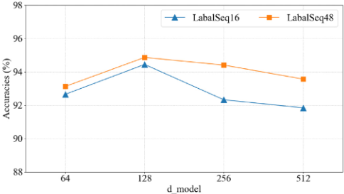</a>
<figcaption>Fig. 12. Comparison of accuracies (%) of different dimension parameters in the multi-head self-attention mechanism. We can see that when dmodel = 128, the overall model obtains the best results on both datasets.</figcaption>
</figure>
<p data-page="11">Second, to evaluate the effectiveness of the proposed GRPEbased transformer model, we compare it with an attention seq2seq model based on GRU-RNN networks and the rhythm-aware attention seq2seq model proposed in [28], while keeping the MS-GAT module same. The baseline transformer model is also taken into comparison. The results of all the four configurations on LabanSeq16 and LabanSeq48 datasets are shown in Fig. 11. We can see that the transformer models outperform RNN-based seq2seq models, which shows that the self-attention mechanism is better at learning complex dance steps than recurrent models. The proposed GRPE-based transformer model performs the best, which indicates that the proposed GRPE module is better at capturing the positional information of motion data sequences.</p>
<p data-page="11">Parameter discussion: As mentioned in Section 2.3, the range of neighboring joints involved in the multi-scale attention computation can be different. In the proposed LabanFormer model, we consider the feature aggregation from first- and second-order neighboring joints. Moreover, the distance between two joints can be 3, 4, or even bigger in the human skeleton graph. We conduct experiments to compare the feature aggregation over neighboring joints at different distances to find the best scale for the proposed MS-GAT network. Results are shown in Table 4. From the table, we can see that the aggregation method using the first and second order is the best. Intuitively, when considering only the first-order neighbors, the learned relationships between neighboring joints in the skeletal graph are limited. In contrast, the further a neighboring joint is, the less impact it has on the current joint. Moreover, the feature aggregation involving too many joints may introduce more noises than useful information, which may reduce the effectiveness of output feature representation. Therefore, the best configuration can be decided in the experiment. From Table 4 we can see that when considering both the first- and second-order neighbors of joints, we can obtain the best result.</p>
<figure data-page="11"><a data-image-zoom="" href="assets/0173-picture.png">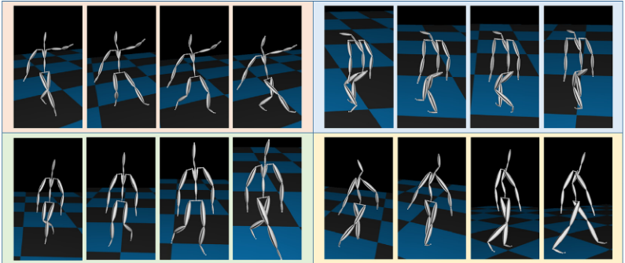</a>
</figure>
<figure data-page="11"><a data-image-zoom="" href="assets/0174-picture.png">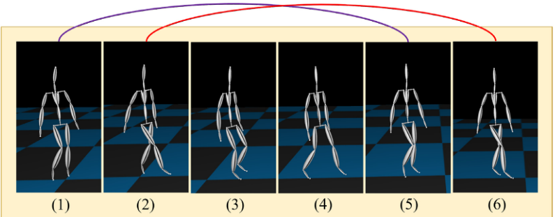</a>
<figcaption>Fig. 13. Illustration of two cases: (a) Samples of flexible lower-limb movements where the dancers bend legs while moving towards different directions. Each row is a group of continuous steps. (b) Three steps moving to the left, where every two snapshots represent a step. The third step (5)-(6) is the same as the first step (1)-(2).</figcaption>
</figure>
<div class="page-marker" id="page-12"><a href="source.pdf#page=12" rel="noopener" target="_blank">PDF p. 12</a></div>
<p data-page="12">In addition, we explore different encoder-decoder configurations for the LabanFormer. Denoting the number of stacked encoders as Ne and the number of decoders as Nd, we conduct the comparison experiments shown in Table 5. The dimension parameter dmodel = 128 and the head number h = 4 are kept unchanged during comparison. From the Table, we can see that more stacked encoders and decoders will not always lead to better results. The best combination of stacked components is 10 encoders and 5 decoders.</p>
<p data-page="12">Besides, we also conduct experiments to compare different parameter dimensions in the multi-head attention mechanism. The most influential parameters are the feature dimensions of Q;K, and V. We have dQ = dK = dV = dmodel=nhead, where the key dimension is dmodel. Comparisons on different dmodel are shown in Fig. 12. From the figure, we can see that when the dimension parameter dmodel is 128, the accuracy of the whole model reaches the best on both datasets.</p>
<p data-page="12">Case study: Moreover, to demonstrate the advantage of the proposed method in handling flexible limb movements and repeated dance steps, we quote some cases from the LabanSeq48 dataset. First, Fig. 13 (a) shows four groups of flexible lower-limb movements, where the dancers bend legs while transferring body weight over two legs towards different directions. These are hard examples for previous methods including [24,26,29], etc. For example, the correct Laban direction symbol for the top-left group is left-forward-low and it should be written in the support column of right, left, and right side, successively. The proposed LabanFormer model successfully recognized the symbol while previous methods confused low-level with middle-level. Our success may benefit from the effective feature aggregated by the proposed MS-GAT.</p>
<p data-page="12">Second, Fig. 13 (b) shows a sequence of three steps moving towards the left, where every two snapshots represent a step. The third step (5)-(6) is the same as the first step (1)-(2). However, previous methods recognize (6) as a wrong symbol due to variation or noises in the data, which will lead to erroneous dance movement interpretation. Meanwhile, the proposed method generates the correct results, which may benefit from the ability of the proposed GRPE-based transformer that can learn global temporal dependencies and associate (2) with (6). Overall, the two cases show that the proposed LabanFormer model is better at dealing with hard examples in motion capture data such as flexible limb movements and complex dance steps.</p>
<p data-page="12">Qualitative results: Finally, we show an example of the final output Labanotation score with generated Laban symbols in the support column for a series of lower limb movements, as in Fig. 14. The motion sequence contains four steps: forward-middle (left leg), forward-middle (right leg), right-forward-middle (left leg), and right-forward-middle (right leg). The generated Laban symbols written in the support columns describe the above movements correctly.</p>
<p data-page="12">Limitations: Despite the good results, there are some limitations in this work. We focus on the lower limb movements for the dance step analysis and generate the Laban symbols in support columns, as most of the previous works do. However, the Labanotation system has other symbols describing the gesture of upper limbs and other kinds of movements, which remains to be explored in future work. In addition, the sequences in the dataset are generally short comparing with a full dance in the real world. We will collect more data with longer sequences to evaluate and improve our model in future.</p>
<h2 data-page="12" id="section-182">4. Conclusion</h2>
<p data-page="12">In this paper, we propose a LabanFormer model with a novel Multi-Scale Graph Attention Network (MS-GAT) and a new Gated Recurrent Positional Encoding (GRPE) based transformer model to automatically generate Labanotation scores in support columns frommotion capture data. For fine-grained joint feature representation, unlike the existing work based on graph convolutional networks (GCNs) for Labanotation generation that ignores the specific contribution of each neighboring joint, the proposed MS-GAT exploits the attention mechanism and aggregates both the firstorder and second-order neighboring joints to learn more finegrained and wider-scale feature correlations between joints in skeletal motion data. Thus, we can obtain a better representation of the flexible dance limb movements.</p>
<p data-page="12">For the temporal modeling of motion sequences and the generation of Laban symbol sequences, different from previous methods using RNN-based seq2seq models that can only sequentially process temporal data, we propose a GPRE-based transformer to learn the global temporal dependencies in dance motion sequences. The novel GRPE module learns positional information with GRUs and can overcome the limitations of both handcrafted encoding functions and fixed-length embedding parameters. With the proposed GRPE module, better positional information can be obtained, thus leading to higher Labanotation generation accuracies. Then, With the encoder-decoder network based on the self-attention mechanism, the relations between every positional pair of the motion sequence can be captured, which leads to a better grasp of complex movement forms such as periodic, symmetric, and repeated dance steps.</p>
<p data-page="12">Extensive experiments show that the proposed method can generate high-quality Labanotation scores. Ablation studies demonstrate the effectiveness of both proposed modules, and comprehensive comparisons show that the proposed new LabanFormer model outperforms the state-of-the-art methods in the automatic Labanotation generation task.</p>
<figure data-page="12"><a data-image-zoom="" href="assets/0186-picture.png">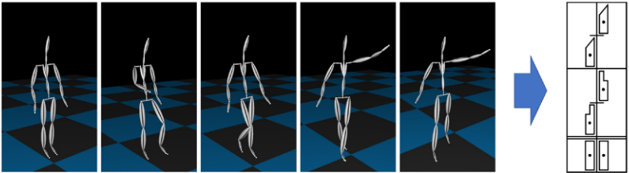</a>
<figcaption>Fig. 14. An example of output Labanotation score composed of a few Laban symbols, which are generated from the motion capture data of several walking movements.</figcaption>
</figure>
<div class="page-marker" id="page-13"><a href="source.pdf#page=13" rel="noopener" target="_blank">PDF p. 13</a></div>
<h2 data-page="13" id="section-188">CRediT authorship contribution statement</h2>
<p data-page="13">Min Li: Conceptualization, Methodology, Software, Data curation, Writing - original draft. Zhenjiang Miao: Data curation, Writing - review &amp; editing, Supervision. Yuanyao Lu: Data curation, Writing - review &amp; editing.</p>
<h2 data-page="13" id="section-190">Declaration of Competing Interest</h2>
<p data-page="13">The authors declare that they have no known competing financial interests or personal relationships that could have appeared to influence the work reported in this paper.</p>
<h2 data-page="13" id="section-192">Acknowledgments</h2>
<p data-page="13">This work was supported in part by the National Natural Science Foundation of China (NSFC) under Grant Nos. 61672089, 61703436, 61572064, 61273274, 61971007, 61571013, the Scientific Research Foundation of North China University of Technology, and the Center of Ethnic and Folk Literature and Art Development (CELFA).</p>
<h2 data-page="13" id="section-194">References</h2>
<p class="list-item" data-page="13">[1] R. Laban, L. Ullmann, The mastery of movement, 4th ed., Dance Books Ltd., Binsted, UK, 2011.</p>
<p class="list-item" data-page="13">[2] A.H. Guest, Labanotation: the system of analyzing and recording movement, 4th ed., Routledge, New York, NY, USA, 2014.</p>
<p class="list-item" data-page="13">[3] K. Kojima, K. Hachimura, M. Nakamura, Labaneditor: Graphical editor for dance notation, in: Proceedings of 11th IEEE International Workshop on Robot and Human Interactive Communication, IEEE, 2002, pp. 59-64.</p>
<p class="list-item" data-page="13">[4] F. Hunt, G. Politis, D. Herbison-Evans, Led &amp; lintel: A windows mini-editor and interprepter for labanotation (Tech. rep.), Basser Department of Computer Science, University of Sidney, Sydney, NSW, Australia, 2010.</p>
<p class="list-item" data-page="13">[5] L. Venable, D. Ralley, V. Alpert, F. Carol, Laban writer workshop, Department of Dance, Ohio State University, Columbus, OH, USA, July 2004.</p>
<p class="list-item" data-page="13">[6] M. Meredith, S. Maddock, et al., Motion capture file formats explained (Tech. rep.), Department of Computer Science, University of Sheffield, 2001.</p>
<p class="list-item" data-page="13">[7] L. Wang, D.Q. Huynh, P. Koniusz, A comparative review of recent kinect-based action recognition algorithms, IEEE Trans. Image Process. 29 (2020) 15-28.</p>
<p class="list-item" data-page="13">[8] B. Ren, M. Liu, R. Ding, H. Liu, A survey on 3d skeleton-based action recognition using learning method, arXiv preprint:2002.05907.</p>
<p class="list-item" data-page="13">[9] K. Hachimura, M. Nakamura, Method of generating coded description of human body motion from motion-captured data, in: IEEE International Workshop on Robot and Human Interactive Communication, 2001.</p>
<p class="list-item" data-page="13">[10] W. Choensawat, M. Nakamura, K. Hachimura, Genlaban: A tool for generating labanotation from motion capture data, Multimedia Tools Appl. 74 (23) (2015) 10823-10846.</p>
<p class="list-item" data-page="13">[11] W. Choensawat, M. Nakamura, K. Hachimura, Applications for recording and generating human body motion with labanotation, Dance Notations and Robot Motion, 2016.</p>
<p class="list-item" data-page="13">[12] H. Chen, G. Qian, J. James, An autonomous dance scoring system using markerbased motion capture, in: IEEE Workshop on Multimedia Signal Processing, 2005.</p>
<p class="list-item" data-page="13">[13] H. Guo, Z. Miao, F. Zhu, G. Zhang, S. Li, Automatic labanotation generation based on human motion capture data, in: Chinese Conference on Pattern Recognition, 2014.</p>
<p class="list-item" data-page="13">[14] Z. Zhou, Z. Miao, J. Wang, A system for automatic generation of labanotation from motion capture data, in: IEEE International Conference on Signal Processing (ICSP), 2016.</p>
<p class="list-item" data-page="13">[15] M. Li, Z. Miao, C. Ma, Automatic labanotation generation from motioncaptured data based on hidden markov models, in: IAPR Asian Conference on Pattern Recognition (ACPR), 2017.</p>
<p class="list-item" data-page="13">[16] M. Li, Z. Miao, C. Ma, Dance movement learning for labanotation generation based on motion-captured data, IEEE Access 7 (2019) 161561-161572.</p>
<p class="list-item" data-page="13">[17] X. Zhang, Z. Miao, Q. Zhang, Automatic generation of labanotation based on extreme learning machine with skeleton topology feature, in: the IEEE International Conference on Signal Processing (ICSP), 2018.</p>
<p class="list-item" data-page="13">[18] X. Zhang, Z. Miao, Q. Zhang, J. Wang, Skeleton-based automatic generation of labanotation with neural networks, J. Electron. Imaging 28 (2) (2019) 1.</p>
<p class="list-item" data-page="13">[19] S. Hao, Z. Miao, J. Wang, W. Xu, Q. Zhang, Labanotation generation based on bidirectional gated recurrent units with joint and line features, in: IEEE International Conference on Image Processing (ICIP), 2019.</p>
<p class="list-item" data-page="13">[20] N. Xie, Z. Miao, J. Wang, Skeleton-based labanotation generation using multimodel aggregation, in: IAPR Asian Conference on Pattern Recognition (ACPR), 2019.</p>
<p class="list-item" data-page="13">[21] Y. Jiang, C. Yang, A motion capture data-driven automatic labanotation generation model using the convolutional neural network algorithm, Wireless Commun. Mobile Comput. 1 (2022).</p>
<p class="list-item" data-page="13">[22] J. Wang, Z. Miao, A method of automatically generating labanotation from human motion capture data, in: International Conference on Pattern Recognition (ICPR), 2018.</p>
<p class="list-item" data-page="13">[23] M. Li, Z. Miao, C. Ma, A. Li, T. Zhou, Sequence-to-sequence labanotation generation based on motion capture data, in: IEEE International Conference on Multimedia &amp; Expo (ICME), 2020.</p>
<p class="list-item" data-page="13">[24] M. Li, Z. Miao, C. Ma, Sequence-to-sequence labanotation generation based on motion capture data, in: the IEEE International Conference on Acoustics, Speech, and Signal Processing (ICASSP), 2020.</p>
<p class="list-item" data-page="13">[25] N. Xie, Z. Miao, J. Wang, Q. Zhang, End-to-end method for labanotation generation from continuous motion capture data, in: IEEE International Conference on Multimedia &amp; Expo (ICME), 2020.</p>
<p class="list-item" data-page="13">[26] M. Li, Z. Miao, X.-P. Zhang, W. Xu, An attention-seq2seq model based on crnn encoding for automatic labanotation generation frommotion capture data, in: the IEEE International Conference on Acoustics, Speech, and Signal Processing (ICASSP), 2021.</p>
<p class="list-item" data-page="13">[27] M. Li, Z. Miao, W. Xu, A crnn-based attention-seq2seq model with fusion feature for automatic labanotation generation, Neurocomputing 454 (2021) 430-440.</p>
<p class="list-item" data-page="13">[28] M. Li, Z. Miao, X.-P. Zhang, W. Xu, C. Ma, N. Xie, Rhythm-aware sequence-tosequence learning for labanotation generation with gesture-sensitive graph convolutional encoding, IEEE Trans. Multimedias 24 (2022) 1488-1502.</p>
<p class="list-item" data-page="13">[29] N. Xie, Z. Miao, X.-P. Zhang, W. Xu, M. Li, J. Wang, Rhythm-aware sequence-tosequence learning for labanotation generation with gesture-sensitive graph convolutional encoding, IEEE Trans. Circuits Syst. Video Technol. 32 (6) (2022) 3722-3734.</p>
<p class="list-item" data-page="13">[30] A. Graves, A.-R. Mohamed, G. Hinton, Speech recognition with deep recurrent neural networks, in: IEEE International Conference on Acoustics, Speech and Signal Processing (ICASSP), 2013.</p>
<p class="list-item" data-page="13">[31] A. Graves, N. Jaitly, Towards end-to-end speech recognition with recurrent neural networks, in: International Conference on Machine Learning (ICML), 2014.</p>
<p class="list-item" data-page="13">[32] M. Niepert, M. Ahmed, K. Kutzkov, Learning convolutional neural networks for graphs, in: International Conference on Machine Learning (ICML), 2016.</p>
<p class="list-item" data-page="13">[33] T.N. Kipf, M. Welling, Semi-supervised classification with graph convolutional networks, in: International Conference on Learning Representations (ICLR), 2017.</p>
<p class="list-item" data-page="13">[34] V. Petar, C. Guillem, Graph attention networks, in: International Conference on Learning Representations (ICLR), 2018.</p>
<p class="list-item" data-page="13">[35] A. Vaswani, N. Shazeer, N. Parmar, J. Uszkoreit, L. Jones, A.N. Gomez, ukasz Kaiser, I. Polosukhin, Attention is all you need, Advances in neural information processing systems (2017) 5998-6008.</p>
<p class="list-item" data-page="13">[36] A.L. Maas, A.Y. Hannun, A.Y. Ng, Rectifier nonlinearities improve neural network acoustic models, International Conference on Machine Learning (ICML), vol. 30, Citeseer, 2013, p. 3.</p>
<p class="list-item" data-page="13">[37] D.-A. Clevert, T. Unterthiner, S. Hochreiter, Fast and accurate deep network learning by exponential linear units (elus), in: International Conference on Learning Representations (ICLR), 2015.</p>
<p class="list-item" data-page="13">[38] D. Zihang, Z. Yang, Y. Yang, J. Carbonell, Q.V. Le, R. Salakhutdinov, Transformerxl: Attentive language models beyond a fixed-length context, in: Proceedings of the 57th Annual Meeting of the Association for Computational Linguistics, 2019.</p>
<p class="list-item" data-page="13">[39] K. Cho, B. Van Merriënboer, C. Gulcehre, D. Bahdanau, F. Bougares, H. Schwenk, Y. Bengio, Learning phrase representations using rnn encoder-decoder for statistical machine translation, Computer Science.</p>
<p class="list-item" data-page="13">[40] OptiTrack, Optitrack motion capture systems for applications ranging from animation, virtual reality, movement sciences, robotics and more, https:// www.optitrack.com/, accessed: October 21, 2022.</p>
<figure data-page="13"><a data-image-zoom="" href="assets/0235-picture.png"></a>
</figure>
<p data-page="13">Min Li received the M.E. and Ph.D. degrees from Beijing Jiaotong University, Beijing, China, in 2016 and 2022, respectively. She is currently a lecturer with the Department of Electronic Engineering, North China University of Technology, Beijing, China. Her current research interests include pattern recognition, motion capturing and human motion analysis.</p>
<div class="page-marker" id="page-14"><a href="source.pdf#page=14" rel="noopener" target="_blank">PDF p. 14</a></div>
<p data-page="14" id="section-237">M. Li, Z. Miao and Y. Lu</p>
<figure data-page="14"><a data-image-zoom="" href="assets/0238-picture.png"></a>
</figure>
<p data-page="14">Zhenjiang Miao received the B.E. degree from Tsinghua University, Beijing, China, in 1987, and the M.E. and Ph. D. degrees from Northern Jiaotong University, Beijing, China, in 1990 and 1994, respectively. From 1995 to 1998, he was a Post-Doctoral Fellow with the Ecole Nationale Superieure d'Electrotechnique, d'Electronique, d'Informatique, d'Hydraulique et des Telecommunications, Institut National Polytechnique de Toulouse, Toulouse, France. From 1998 to 2004, he was with the Institute of Information Technology, National Research Council Canada, Nortel Networks, Ottawa, Canada. He joined Beijing Jiaotong University, Beijing, in</p>
<p data-page="14">2004. He is currently a Professor and Director with the Media Computing Center, Beijing Jiaotong University, and Director of the Institute for Digital Culture Research, Center for Ethnic and Folk Literature and Art Development, Ministry Of Culture, Beijing, China. His current research interests include image and video processing, multimedia processing, and intelligent human-machine interaction.</p>
<figure data-page="14"><a data-image-zoom="" href="assets/0241-picture.png">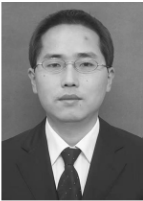</a>
</figure>
<p data-page="14">Yuanyao Lu received his Ph.D. from the Chinese Academy of Sciences, Beijing, China, in 2006. He is currently a professor with the Department of Electronic Engineering, North China University of Technology, Beijing, China. His current research is mainly on image processing and visual perception, pattern recognition, and artificial intelligence. He has published more than 30 papers in international journals and conferences.</p></main>
</div>
<dialog aria-labelledby="image-viewer-label" id="image-viewer">
<div class="image-viewer-toolbar">
<span id="image-viewer-label">原图 / Original image</span>
<a href="" id="image-viewer-link" rel="noopener" target="_blank">单独打开 ↗</a>
<button autofocus="" id="image-viewer-close" type="button">关闭 / Close</button>
</div>
<div class="image-viewer-content"></div>
</dialog>
</body>
</html>
